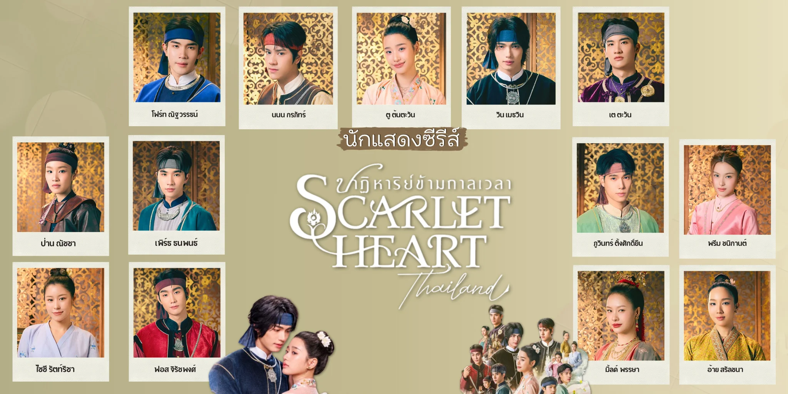
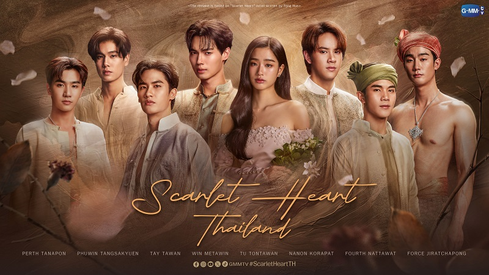

1. แนะนำตัวละครหลัก

คำนำเนื้อหา: ทำความรู้จักกับบทบาทสำคัญและการแสดงอันน่าประทับใจของนักแสดงนำที่จะมาพาคุณอินไปกับเรื่องราวความรักข้ามเวลา...
Read More (อ่านประวัติและข้อมูลตัวละครเต็ม)รวบรวมข้อมูลตัวละครและเรื่องย่อสุดเข้มข้นจากซีรีส์ฟอร์มยักษ์แห่งปี Scarlet Heart Thailand

Scarlet Heart Thailand เป็นซีรีส์ไทยฟอร์มยักษ์ที่รีเมคจากซีรีส์ยอดฮิต ขนทัพนักแสดงระดับท็อป ฝีมือการแสดงยอดเยี่ยม และฉากย้อนยุคสุดอลังการ ติดตามอัปเดตข้อมูลตัวละครและเรื่องย่อได้ที่นี่ทุกสัปดาห์

คำนำเนื้อหา: ทำความรู้จักกับบทบาทสำคัญและการแสดงอันน่าประทับใจของนักแสดงนำที่จะมาพาคุณอินไปกับเรื่องราวความรักข้ามเวลา...
Read More (อ่านประวัติและข้อมูลตัวละครเต็ม)คำนำเนื้อหา: ติดตามเรื่องราวความเข้มข้น การแย่งชิงบัลลังก์ และความรักข้ามมิติเวลาที่คุณไม่ควรพลาด...
Read More (อ่านเรื่องย่อฉบับเต็ม)ผู้เขียน: Yuttapong Sriprasom
ที่อยู่โดยย่อ: เขตหลักสี่ กรุงเทพมหานคร